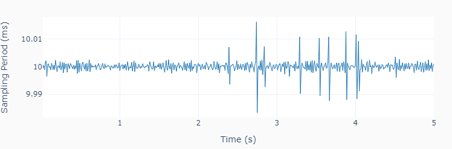
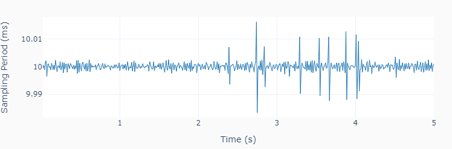

Digital I/O
This example code shows how to use digital inputs and outputs in a data acquisition loop. If you’re using a LabJack U3, random digital outputs (0 or 1) are generated at a constant time interval of 0.2 s on ports FIO4 and FIO5. Ports FIO6 and FIO7 are used to sample the signals at a constant time interval of 10 ms. The variability on the sampling period is less than 0.02 ms.
 

""" lj_io_digital.py
Uses digital input and output channels.
This example shows how to use digital inputs and outputs in a data acquisition
loop. Accurate time execution of events can be achieved by the use of a timer
logic in the loop. The voltage measurements are executed at a fixed sampling
period.
Setup:
On a U3, connect FIO4 to FIO6, and FIO5 to FIO7
On a U6, connect FIO0 to FIO2, and FIO1 to FIO3
On a T7, connect FIO0 to FIO2, and FIO1 to FIO3
The LabJack unified methods in this example are:
set_digital ...... Writes digital value to specified port(s)
get_digital ...... Reads digital value from specified port(s)
close ............ Closes the LabJack device
"""
import time
import numpy as np
from labjack_unified.utils import plot_line
from labjack_unified.devices import LabJackU3, LabJackU6, LabJackT7
# To use a LabJack U6 or a T7, change the device name
# from LabJackU3 below to either LabJackU6 or LabJackT7
lj = LabJackU3()
# Selecting port names based on the LabJack class
if lj.__class__ == LabJackU3:
portout = ['FIO4', 'FIO5']
portin = ['FIO6', 'FIO7']
else:
portout = ['FIO0', 'FIO1']
portin = ['FIO2', 'FIO3']
# Assigning parameters
tstep = 0.2 # Interval between step changes (s)
tsample = 0.01 # Data sampling period (s)
t = [] # Output time array
s1 = [] # Output sampled state 1 array
s2 = [] # Output sampled state 2 array
# Initializing timers and starting main clock
tprev = 0
tcurr = 0
tstart = time.perf_counter()
# Executing acquisition loop
print('Running code for 5 seconds ...')
while tcurr <= 5:
# Updating digital output every `tstep` seconds
# with random values between 0 and 1
if (np.floor(tcurr/tstep) - np.floor(tprev/tstep)) == 1:
lj.set_digital(portout[0], np.round(np.random.rand()))
lj.set_digital(portout[1], np.round(np.random.rand()))
# Updating previous time and getting current time (s)
tprev = tcurr
tcurr = time.perf_counter() - tstart
# Acquiring digital data every `tsample` seconds
# and appending values to output arrays
if (np.floor(tcurr/tsample) - np.floor(tprev/tsample)) == 1:
t.append(tcurr)
s1.append(lj.get_digital(portin[0]))
s2.append(lj.get_digital(portin[1]))
print('Done.')
# Closing the device
lj.close()
del lj
# Plotting results
plot_line([t]*2, [s1, s2], yname=portin, axes='multi')
plot_line([t[1::]], [1000*np.diff(t)], yname=['Sampling Period (ms)'])